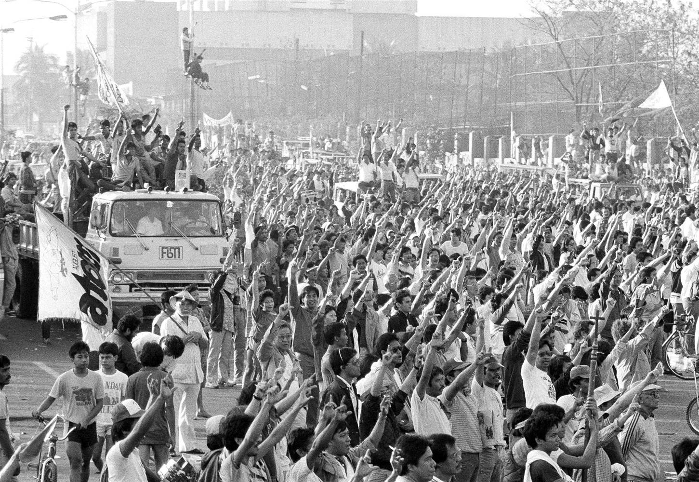
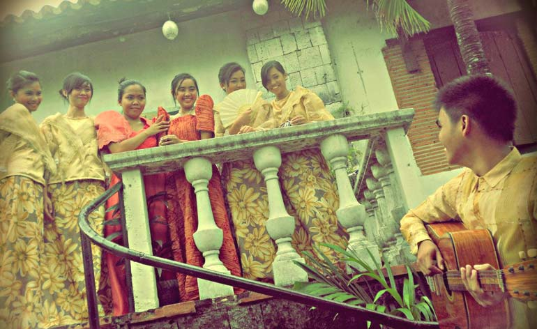

Part of the Communication and Technology class I am taking is to write an analysis paper that talks about "a specific communication technology adopted/developed in your hometown, city, or country of origin". The paper "must argue for the social, and/or political, and/or economic and/or other causes that brought it about, and analyze its impact on the world stage of communication technology." With that in mind, I have two cool ideas for this paper.
Radio Veritas
How a Radio Station Started a Revolution
This first idea looks at Radio Veritas, a radio station of the Catholic Church in the Philippines that was instrumental in the overthrow of the then dictator President Ferdinand Marcos in the 1986 Revolution. The 1986 Revolution, dubbed the People Power Revolution, is historic, in that it is the first bloodless revolution in the world.
What makes this idea even more interesting is that it looks at how at a time of media censorship, new emerging forms of communication with fast transmission times such as radio served a monumental role in rallying people together. It also looks at how the radio affected governments and politics way back in the 1980's and how this might affect our current governments and politics.
In particular, this idea of using the radio as a platform for rallying people together probably sparked the same use in the recent Egyptian Revolution or the Occupy Wall Street Movement that used Twitter for political campaigning. It would be interesting to see parallels and how one technology might affect another.
Harana
The Lost Art of the Filipino Serenade
This second idea looks at Harana, an art of courtship in the Philippines. It looks at how songs have been a huge part of people's lives, and how the Harana, the Filipino serenade influenced current Filipino dating, and even just dating in general.
This paper would explore the art of serenading, and how that translates to the modern day. It would also look at how new commmunication technology and media have affected this art form.
While there might not be a very global impact of this communication technology, it helps people understand a communication technology which is very traditionally Filipino, and how it has shaped and transformed Filipino society for at least over 200 years.
So these are the ideas that I have for the paper. While I would love to learn more about the Filipino serenade, I think the first idea is way cooler! What do you think?